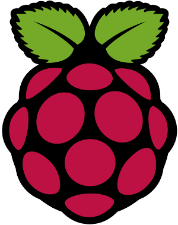
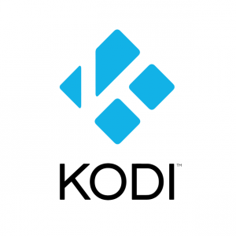
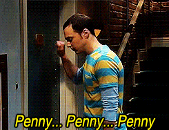

EITB nahieran: askatu bideoak API honen bidez
EITB APIa? Zergatik? (I)
- Zergatik ez?
- Gurea ere bada, ezta?
- XXI. mendean gaude jada...
Zergatik? (II)
- Webgunea infumablea iruditzen zaidalako
- Ez dudalako lortzen ganoraz ezer ikustea
- Nabigatzailea kolgatzen didalako
- Flash erabiltzen duelako eta askotan ez zaidalako kargatzeko

Raspberry PI
- Raspberry PI bat erosi nuen

Kodi (lehen XBMC)
Instalatu Kodi
Deskargatu zure sistemarakoKodi (lehen XBMC)
- Youtube
- PlexBMC
- OpenSubtitles
- ...
- tvalacarta
EITB eta tvalacarta?
- Ba bai, tvalacartak bazeukan EITB ikusteko aukera, baina ez zebilen
- Webgune zaharrerako prestatuta zegoen
- Screenscraping egiten zuen
def mainlist(item):
logger.info("[eitb.py] mainlist")
itemlist=[]
url = 'http://www.eitb.tv/es/'
# Descarga la página
data = scrapertools.cachePage(url)
patron = "#CENSORED REGEX#"
matches = re.compile(patron,re.DOTALL).findall(data)
if DEBUG: scrapertools.printMatches(matches)
for id,titulo,titulo2 in matches:
scrapedtitle = titulo
if titulo!=titulo2:
scrapedtitle = scrapedtitle + " - " + titulo2
scrapedurl = "http://www.eitb.tv/es/get/playlist/"+id
scrapedthumbnail = ""
scrapedplot = ""
if (DEBUG): logger.info("title=["+scrapedtitle+"], url=["+scrapedurl+"], thumbnail=["+scrapedthumbnail+"]")
itemlist.append( Item(channel=CHANNELNAME, title=scrapedtitle , action="episodios" , url=scrapedurl, thumbnail=scrapedthumbnail, plot=scrapedplot , folder=True) )
return itemlist
def episodios(item):
logger.info("[eitb.py] episodios")
itemlist=[]
# Descarga la página
data = scrapertools.cachePage(item.url)
logger.info(data)
episodios_json = load_json(data)
if episodios_json == None : episodios_json = []
itemlist = []
for video in episodios_json['videos']:
scrapedthumbnail = video['thumbnailURL']
if scrapedthumbnail is None:
scrapedthumbnail = ""
logger.info("scrapedthumbnail="+scrapedthumbnail)
scrapedtitle = video['name']#.encode("utf-8",errors="ignore")
#scrapedtitle = unicode( scrapedtitle , "iso-8859-1" , errors="ignore").encode("utf-8")
scrapedplot = video['shortDescription']#.encode("utf8","ignore")
try:
scrapedtitle = video['customFields']['name_c']#.encode("utf-8","ignore")
scrapedplot = video['customFields']['shortdescription_c']#.encode("utf-8","ignore")
except:
pass
scrapedurl = "http://www.eitb.tv/es/#/video/"+str(video['id'])
if (DEBUG): logger.info("title=["+scrapedtitle+"], url=["+scrapedurl+"], thumbnail=["+scrapedthumbnail+"]")
itemlist.append( Item(channel=CHANNELNAME, title=scrapedtitle , action="play" , server="eitb", url=scrapedurl, thumbnail=scrapedthumbnail, plot=scrapedplot , folder=False) )
return itemlist
def get_video_url( page_url , premium = False , user="" , password="", video_password="", page_data="" ):
logger.info("[eitb.py] get_video_url(page_url='%s')" % page_url)
data = scrapertools.cache_page(page_url)
player_id = scrapertools.get_match(data,'<param name="playerID" value="(\d+)')
logger.info("player_id="+player_id)
player_key = scrapertools.get_match(data,'<param name="playerKey" value="([^"]+)"')
logger.info("player_key="+player_key)
# id del contenido, viene en la URL
# http://www.eitb.tv/es/#/video/1628880837001
video_player = scrapertools.get_match(page_url,'http://www.eitb.tv/es/#/video/(\d+)')
logger.info("video_player="+video_player)
response = get_rtmp( player_key , video_player , page_url , player_id)


2016 urtean horrela ibili behar izatea ere TB publiko batekin...
Utzi baina....
youtube-dl ezagutu nuen arte
youtube-dl
- Youtubetik bideoak deskargatzeko aplikazioa
- Python pakete bat da
- Python paketeetatik erabili daiteke
- Eta ez da youtuberako bakarrik, EITBrekin funtzionatzen du
Kodea youtube-dl-rekin
def get_video_url( page_url , premium = False , user="" , password="", video_password="", page_data="" ):
logger.info("[eitb.py] get_video_url(page_url='%s')" % page_url)
ydl = youtube_dl.YoutubeDL({'outtmpl': u'%(id)s%(ext)s'})
result = ydl.extract_info(page_url, download=False)
video_urls = []
if 'formats' in result:
for entry in result['formats']:
if 'http' in entry['format']:
video_urls.append([safe_unicode(entry['format']).encode('utf-8'), safe_unicode(entry['url']).encode('utf-8')])
logger.info('Append: {}'.format(entry['url']))
return video_urls
eta API bat egiten badut?

EITB APIa
- Pyramid-en eginda
- Framework arin-arina
- Zuk aukeratu guztia (DB, template, ...)

APIa pyramid-en
- Misterio handirik ez
- 3 URL:
- programa guztiak
- programa baten saioak
- saioa
- Plone-ren API lanean inspiratuta
Esan eta egin
Nabigatu APIanKodea ikusi
@view_config(route_name='programs', renderer='prettyjson')
def programs(request):
"""get all information about all the programs.
How: scrap the website and look for the javascript links.
"""
data = requests.get(EITB_FRONT_PAGE_URL)
matches = re.compile(EITB_EPISODE_LIST_REGEX, re.DOTALL).findall(data.text)
result = {
'@context': 'http://www.w3.org/ns/hydra/context.jsonld',
'@id': request.route_url('programs'),
'@type': 'TV',
'parent': {},
}
results = []
for id, title1, title2 in matches:
scrapedtitle = title1
if title1 != title2:
scrapedtitle = scrapedtitle + " - " + title2
results.append({
'@id': request.route_url('playlist', playlist_id=id),
'@type': 'Playlist',
'title': scrapedtitle,
'description': '',
})
result['member'] = results
return result
@view_config(route_name='playlist', renderer='prettyjson')
def playlist(request):
""" get all the information about the given program.
How: get the information from a pseudo-api
"""
playlist_id = request.matchdict['playlist_id']
result = {
'@context': 'http://www.w3.org/ns/hydra/context.jsonld',
'@id': request.route_url('playlist', playlist_id=playlist_id),
'@type': 'Playlist',
'parent': request.route_url('programs'),
}
playlist_url = EITB_PLAYLIST_BASE_URL.format(playlist_id)
data = requests.get(playlist_url)
playlist_data = data.json()
web_medias = playlist_data.get('web_media')
del playlist_data['web_media']
playlist_data['member'] = []
for web_media in web_medias:
item = {
'@id': create_internal_video_url(
playlist_data.get('name_playlist'),
playlist_data.get('id_web_playlist'),
web_media.get('NAME_ES'),
web_media.get('ID_WEB_MEDIA'),
request=request,
),
'@type': 'Episode',
'title': web_media.get('NAME_ES'),
'description': web_media.get('SHORT_DESC_ES', ''),
}
playlist_data['member'].append(item)
del playlist_data['id']
result.update(playlist_data)
return result
@view_config(route_name='episode', renderer='prettyjson')
def episode(request):
""" Get all the information and the video links from a given episode.
How: use youtube-dl to get the information
"""
episode_url = request.matchdict['episode_url']
url = EITB_VIDEO_BASE_URL + episode_url
playlist_title, playlist_id, video_title, video_id = episode_url.split('/')
result = {
'@context': 'http://www.w3.org/ns/hydra/context.jsonld',
'@id': request.route_url('episode', episode_url=episode_url),
'@type': 'Episode',
'parent': request.route_url('playlist', playlist_id=playlist_id),
}
ydl = youtube_dl.YoutubeDL({'outtmpl': '%(id)s%(ext)s'})
video_data = ydl.extract_info(url, download=False)
result.update(video_data)
return result
def clean_title(title):
"""slugify the titles using the method that EITB uses in
the website:
- url: http://www.eitb.tv/resources/js/comun/comun.js
- method: string2url
"""
translation_map = {
'À': 'A', 'Á': 'A', 'Â': 'A', 'Ã': 'A', 'Ä': 'A', 'Å': 'A', 'Æ': 'E',
'È': 'E', 'É': 'E', 'Ê': 'E', 'Ë': 'E',
'Ì': 'I', 'Í': 'I', 'Î': 'I', 'Ï': 'I',
'Ò': 'O', 'Ó': 'O', 'Ô': 'O', 'Ö': 'O',
'Ù': 'U', 'Ú': 'U', 'Û': 'U', 'Ü': 'U',
'Ñ': 'N', '?': '', '¿': '', '!': '',
'¡': '', ': ': '', '_': '-', 'º': '',
'ª': 'a', ',': '', '.': '', '(': '',
')': '', '@': '', ' ': '-', '&': ''
}
val = title.upper()
for k, v in translation_map.items():
val = val.replace(k, v)
return val.lower()
eta honekin zer?
- Egin nahi duzuna
- Telebista ikusteko beste modu batzuk daude orain
- Kodi bat da, baina beste mila daude (chromecast, SmartTV, ...)
- Eman sarrera bideotekara era garbi baten
- EITBk ez badu egiten, besteok egingo dugu
ingurukoek badute APIa
Eta garatzaileok gauzak egiteko aukera dugu
Jendeak eskatzen badu egin beharko dute. Denok joan beharko gara EITBra eskatzera
Eskerrik asko
Info gehiago
- APIa
- https://still-castle-99749.herokuapp.com
- Kodea
- https://github.com/erral/eitbapi
- Aurkezpena
- https://erral.github.io/eitbapi/setlem
- Twitterren
- @erralin